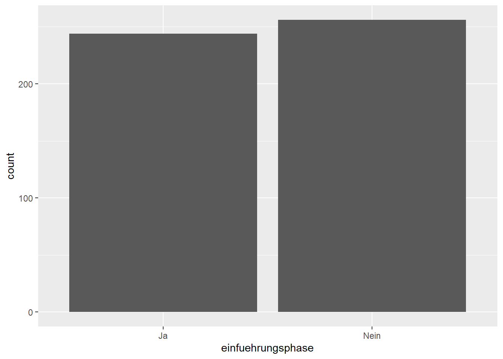
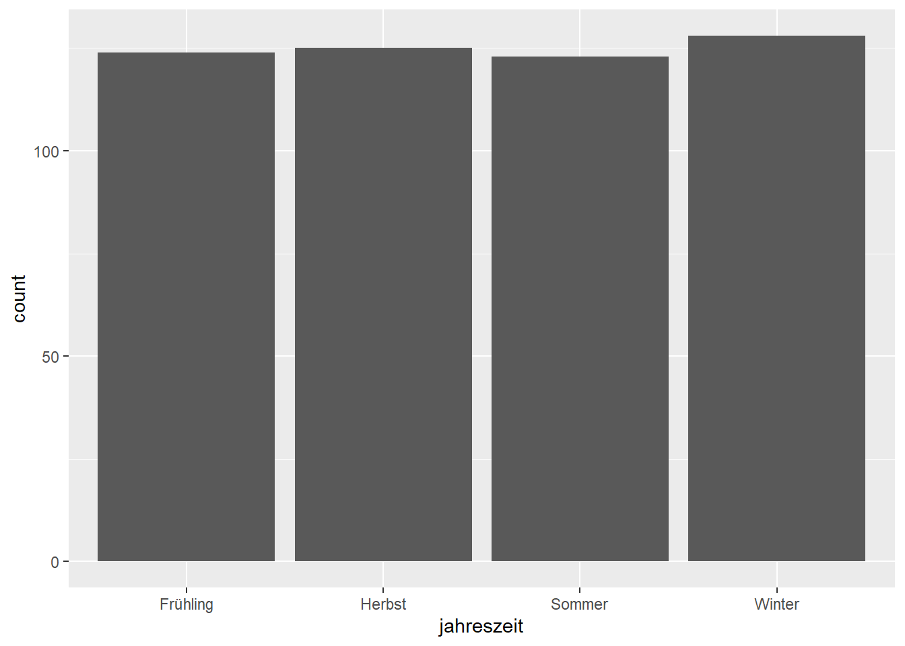
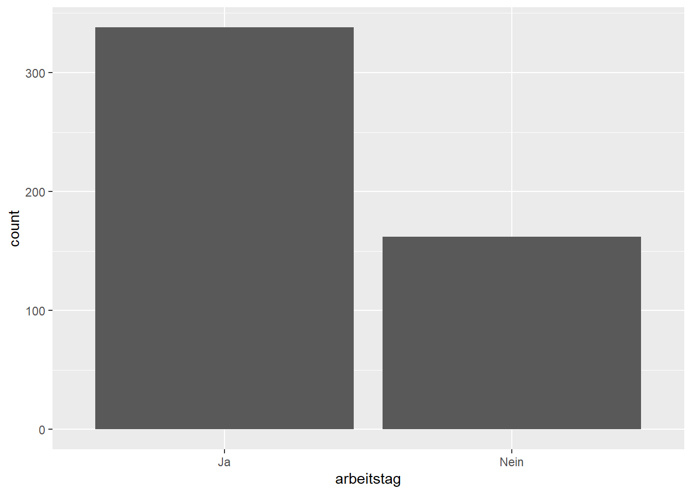
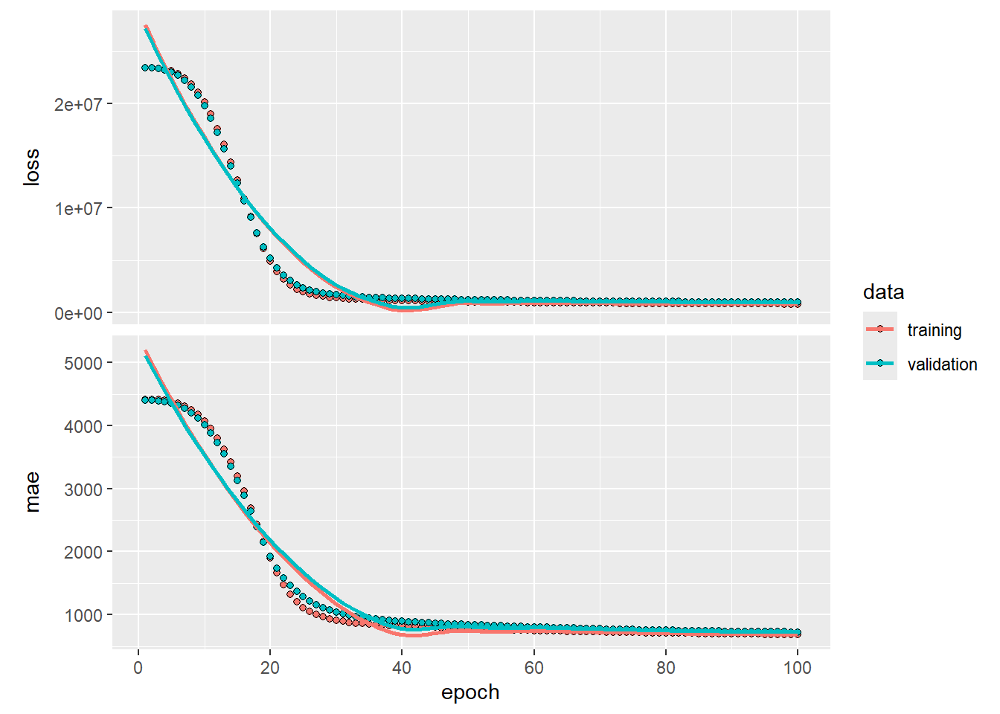

Marcel Albers, Koen Loogman, Jacques Peluso und Steffen Seegler
Veröffentlichungsdatum
21. August 2024
Einleitung
Aufgabenstellung
Für die Vermietung von Fahrrädern sind verschiedene Aspekte ausschlaggebend. In dem Fall des vorliegenden Szenarios sind dies die potentiell erklärenden Variablen Einführungsphase, Jahreszeit, Wetter, Arbeitstag, Temperatur, Windgeschwindigkeit und Luftfeuchtigkeit. Die Ausprägung dieser wurden von früheren Vermietungen in einem Trainingsdatensatz festgehalten. Um künftige Fahrradvermietungen vorhersagen zu können, müssen die Zusammenhänge zwischen den genannten Variablen ermittelt und in einem Modell festgehalten werden. Ein zweiter Datensatz, der Anwendungsdatensatz, dient als Grundlage für den Performancetest.
Zielsetzung
Ziel der Arbeit ist es, ein Modell zu entwickeln, welches die Zielvariable ^y0 für die gegeben Anwendungsdaten x0 voraussagt. Die Zielvariable beschreibt hierbei die Anzahl an täglichen Fahrradvermietungen. Basis der Modellierung bilden die Trainingsdaten x,y. Die Bewertung von diesem Wert findet mithilfe des mittleren absoluten Fehlers - MAE (mean absolute error) statt. Der MAETest ist möglichst klein zu halten. Wie häufig wird eine Fahrradvermietung täglich stattfinden?
Aufbau der Arbeit
Das nachfolgende Kapitel Explorative Datenanalyse und Datenverarbeitung befasst sich mit der detaillierten Beschreibung des vorliegenden Datensatzes und der Analyse von diesem. Hierbei werden die Zusammenhänge von verschiedenen Konstellationen der Attribute betrachtet. Des Weiteren findet eine Datenaufbereitung statt, die für die spätere Verarbeitung der Daten in den Modellen notwendig ist. Im darauf folgenden Kapitel, der Methodenbeschreibung, wird die Auswahl der Modelle und die Funktionsweise dieser erläutert. Nach dem Training des Modells, wird dieses angewendet, die Ergebnisse aufgeführt, betrachtet und eine Vorhersage getroffen. Die Zusammenfassung der Arbeit stellt die Ergebnisse dar und führt diese als abschließendes Kapitel zusammen.
#Einlesen der relevanten Datensätze, wobei die entsprechenden CSV-Dateien aus dem festgelegten Verzeichnis data/raw geladen werden.
# Load dataraw.application <-here("data", "raw", "anwendung.csv") |>read.csv2()raw.dataset <-here("data", "raw", "train.csv") |>read.csv2()# Show the structure of the datastr(raw.application)
Der vorliegende Datensatz ist in zwei Teildatenmengen ohne fehlende Werte aufgeteilt. Diese umfassen meteorologische und temporale Informationen, die in einem strukturierten Format bereitgestellt wurden. Die Gesamtdatenmenge bildet sich aus aus den Anwendungsdaten, bestehend aus 200 Beobachtungen und 7 Variablen und den Trainingsdaten, bestehend aus 500 Beobachtungen und 8 Variablen. Die ersten 7 Variablen der Datensätze sind formal deckungsgleich. Die zusätzliche Variable des Trainingsdatensatzes enthält die Zielvariable, die durch die Modellierung angenähert wird.
Variablenübersicht:
Einführungsphase: Nominalskalierte, kategorische Variable mit den Ausprägungen “Ja” und “Nein”.
Jahreszeit: Ordinalskalierte, kategorische Variable mit vier Ausprägungen Frühling, Sommer, Herbst und Winter.
Wetter: Ordinalskalierte, kategorische Variable mit den Hauptausprägungen “Gut” und “Nicht gut”, sowie “Schlecht”.
Arbeitstag: Nominalskalierte, kategorische Variable mit den Ausprägungen “Ja” und “Nein”.
Temperatur: Intervallskallierte, stetig, metrische Variable, die die Temperatur in Grad Celsius angibt.
Windgeschwindigkeit: Verhältnisskalierte, stetig, metrische Variable, die die Windgeschwindigkeit in km/h misst.
Luftfeuchtigkeit: Verhältnisskalierte, stetig, metrische Variable, die die relative Luftfeuchtigkeit in Prozent angibt.
Vermietungen: Verhältnisskalierte, diskret, metrische Variable und gibt die Anzahl der Vermietungen als Ganzzahl an.
Häufigkeitsverteilung der Vermietungen
Die Analyse der Häufigkeitsverteilung der Vermietungen zeigt eine Verteilung mit einem Hauptpeak und zwei kleineren Peaks, die links und rechts von diesem liegen. Diese Verteilung weist eine unimodale Struktur auf, wobei die kleineren Peaks auf Variationen innerhalb der Daten hinweisen. Dieses Muster kann durch die unterschiedlichen Einflüsse der Variablen im Datensatz verursacht werden, welche die Vermietungszahlen beeinflussen. Diese werden in dem folgenden Absatz näher betrachtet.
fav_stats(raw.dataset$vermietungen)
min Q1 median Q3 max mean sd n missing
23 2825.25 4514.5 5871.75 8715 4416.606 1989.573 500 0
Der erste zu untersuchende Einflussfaktor ist die kategoriale Variable “Einführungsphase” und deren Verteilung. Beide Kategorien “Ja” und “Nein” haben eine ähnliche Anzahl von Einträgen (Ja=244, Nein=256). Insgesamt zeigt die Verteilung, dass es keinen signifikanten Unterschied in der Anzahl der Einträge zwischen den beiden Kategorien gibt.
Einfuehrungsphase
gf_bar(~ einfuehrungsphase, data=raw.dataset)

Vermietungen in Abhängigkeit zur Einfuehrungsphase
Der Boxplot veranschaulicht die Verteilung der Vermietungen im Kontext der Einführungsphase (Ja/Nein) und zeigt mehrere wesentliche Aspekte auf. Der Median der Vermietungen ist in der Gruppe ohne Einführungsphase („Nein“) höher als in der Gruppe mit Einführungsphase („Ja“). Dies weist auf eine größere zentrale Tendenz der Vermietungen hin, wenn keine Einführungsphase vorliegt. Zudem ist der Interquartilsabstand (IQR) in der Gruppe ohne Einführungsphase ebenfalls größer, was auf eine erhöhte Streuung der Daten in dieser Gruppe hindeutet. Beide Gruppen zeigen keine auffälligen Ausreißer, da alle Datenpunkte innerhalb der Whisker liegen. Insgesamt sind die Vermietungen in der Gruppe ohne Einführungsphase höher, was durch die Position der Box und der Whisker im Boxplot deutlich wird.
Die Häufigkeit der Vorkommen über die verschiedenen Jahreszeiten ist hinweg weitgehend gleichmäßig verteilt. Dies bedeutet, dass es keine signifikanten Unterschiede oder ausgeprägte Schwankungen in der Anzahl der Vorkommen zu verschiedenen Zeiten des Jahres gibt.
gf_bar(~ jahreszeit, data=raw.dataset)

Vermietungen in Abhängigkeit zur Jahreszeit
Im Frühling und Herbst sind die Verteilungen der Vermietungen ähnlich, wobei beide Jahreszeiten relativ große Interquartilsabstände aufweisen. Dies deutet auf eine breite Streuung der Daten in diesen Perioden hin. Die Medianwerte sind in beiden Fällen hoch, sodass die Vermietungsaktivität in diesen Jahreszeiten stark vertreten ist. Im Sommer bleibt die Verteilung ähnlich, aber es gibt einen Anstieg im Medianwert, was darauf hinweist, dass die Vermietungen in dieser Jahreszeit tendenziell etwas höher sind. Der Winter hingegen zeigt eine deutliche Verringerung der Vermietungszahlen, wie durch den niedrigeren Median und den geringeren Interquartilsabstand ersichtlich ist. Die geringere Variabilität im Winter deutet darauf hin, dass die Vermietungsaktivitäten in dieser Jahreszeit relativ konstant, aber auf einem niedrigen Niveau sind.
Das Balkendiagramm illustriert die Häufigkeit der Wetterkategorien “Gut”, “Nicht gut” und “Schlecht”. Die Kategorie “Gut” weist die höchste Anzahl von Beobachtungen auf. Die Kategorie “Nicht gut” liegt in der Mitte, mit etwa der Hälfte der Zählungen von “Gut”, was zeigt, dass solche Wetterbedingungen weniger häufig sind, aber dennoch häufiger als “Schlecht” vorkommen. Die Kategorie “Schlecht” verzeichnet die geringste Anzahl von Beobachtungen und tritt somit am seltensten auf.
Das Balkendiagramm zeigt eine deutliche Dominanz guten Wetters, während schlechtes Wetter selten ist. “Nicht gut” liegt in einer mittleren Häufigkeitsposition, was die Variabilität der Wetterbedingungen verdeutlicht, jedoch mit einer klaren Präferenz für gutes Wetter.
gf_bar(~ wetter, data=raw.dataset)
Vermietungen in Abhängigkeit zum Wetter
Die Boxplots zeigen, dass die Vermietungszahlen bei gutem Wetter am höchsten sind, mit einem Median knapp unter 5000 und einer breiten Streuung. Bei “Nicht gut” liegt der Median etwas niedriger, aber ähnlich, mit geringerer Streuung. Die Vermietungszahlen sind bei schlechtem Wetter deutlich niedriger, mit einem Median unter 2500 und einer kleineren Streuung. Gutes Wetter führt demnach zu den höchsten und variabelsten Vermietungszahlen, während schlechtes Wetter mit deutlich geringerer Nachfrage verbunden ist.
Das Diagramm zeigt, dass die meisten Beobachtungen (>300) an Arbeitstagen gesammelt wurden, was darauf hindeutet, dass diese Tage in der zugrunde liegenden Datensatz häufiger beobachtet wurden als Nicht-Arbeitstage. Vermietungen werden demnach häufiger an Arbeitstagen als an Nicht-Arbeitstagen wie Wochenenden, Feiertagen oder in den Ferien durchgeführt.
gf_bar(~ arbeitstag, data=raw.dataset)

Vermietungen in Abhängigkeit zum Arbeitstag
Der Median der Vermietungen ist an Arbeitstagen etwas niedriger als an Nicht-Arbeitstagen. Der Interquartilsabstand (IQR) ist in beiden Fällen ähnlich, was darauf hindeutet, dass die Streuung der mittleren 50% der Daten an beiden Tagen vergleichbar ist. Die Whisker erstrecken sich ebenfalls in ähnlicher Weise, was auf eine vergleichbare Spannweite der Daten hinweist. Die Verteilungen sind relativ symmetrisch, da die Mediane etwa in der Mitte der Boxen liegen. Zudem gibt es keine offensichtlichen Ausreißer, da keine Punkte außerhalb der Whisker zu sehen sind. Schlussfolgernd lässt sich dazu sagen, dass die Vermietungen an Arbeitstagen und Nicht-Arbeitstagen ähnliche Verteilungen aufweisen, wobei die Medianwerte an Nicht-Arbeitstagen geringfügig höher sind.
Die Temperatur zeigt eine bimodale Verteilung der Daten, mit zwei Häufigkeitsspitzen bei etwa 8°C und 24°C. Dies deutet darauf hin, dass diese Temperaturbereiche am häufigsten auftreten. Die Dichte nimmt an den Rändern, insbesondere bei Temperaturen unter 5°C und über 24°C, deutlich ab, was auf seltenere extreme Temperaturen hinweist. Insgesamt zeigt die Verteilung eine Konzentration der Temperaturen in zwei unterschiedlichen Bereichen, was saisonalen Schwankungen entspricht.
fav_stats(raw.dataset$temperatur)
min Q1 median Q3 max mean sd n missing
-3.59 7.4825 15.21 23.02 33.83 15.03484 8.778967 500 0
Die Abhängigkeit zwischen der Temperatur und der Anzahl der Vermietungen zeigt einen anfänglichen Anstieg der Vermietungszahlen mit zunehmender Temperatur, wobei ein Maximum bei etwa 20°- 25°C erreicht wird. Jenseits dieses Temperaturwertes nimmt die Anzahl der Vermietungen trotz weiter steigender Temperaturen ab. Dies legt nahe, dass gemäßigte Temperaturen um 20°C optimal für Vermietungen sind, während höhere Temperaturen tendenziell eine negative Auswirkung auf die Nachfrage haben könnten.
Die Verteilung der Windgeschwindigkeiten weist einen deutlichen Gipfel bei etwa 11 km/h auf und stellt damit die häufigste Windgeschwindigkeit in den Daten dar. Abseits dieser Wertes nimmt die Dichte der Verteilung ab. Höhere Windgeschwindigkeiten treten seltener auf. Die Verteilung ist leicht rechtsschief, was darauf hindeutet, dass extrem hohe Windgeschwindigkeiten weniger häufig sind, aber dennoch vorkommen.
fav_stats(raw.dataset$windgeschwindigkeit)
min Q1 median Q3 max mean sd n missing
1.49 8.9575 11.91 15.6925 34.41 12.86882 5.358726 500 0
Vermietungen in Abhängigkeit zur Windgeschwindigkeit
Die Glättungslinie im Punktdiagramm zur Abhängigkeit der Vermietungen zur Windgeschwindigkeit verdeutlicht den Trend der Daten und zeigt, dass die Anzahl der Vermietungen zunächst mit zunehmender Windgeschwindigkeit steigt. Ab einem bestimmten Punkt beginnt sie jedoch wieder zu sinken.
Verteilung der Luftfeuchtigkeitsdaten in %, mit einem Minimum von 3,88 und einem Maximum von 103,61. Das Maximum von 103,61 scheint hierbei ein fehlerhafter Wert zu sein, da Luftfeuchtigkeitswerte ein Höchstwert von 100 erreichen können. Der Mittelwert und der Median liegen nahe bei 62,39 bzw. 62,35. Im Gesamten ergibt sich hierbei eine Normalverteilung mit einer moderaten Streuung um den Mittelwert.
fav_stats(raw.dataset$luftfeuchtigkeit)
min Q1 median Q3 max mean sd n missing
3.88 50.935 62.345 74.015 103.61 62.38542 15.46771 500 0
Der höchste Punkt der Trendlinie im Punktdiagramm befindet sich ungefähr im Bereich einer Luftfeuchtigkeit von 50 bis 60, was darauf hindeutet, dass dieser Bereich optimal für die meisten Vermietungen ist.
Folgend wird die Aufbereitung des Datensatz systematisch in mehreren Schritten durchgeführt. Diese sind notwendig für die Optimierung der Daten, um anschließend das neuronale Netz zu traineren.
Zunächst wird eine Kopie des ursprünglichen Datensatzes erstellt. Dies dient dem Zweck, die Originaldaten unverändert zu lassen und eine nicht-destruktive Bearbeitung zu ermöglichen. Diese Vorgehensweise stellt sicher, dass die Integrität der Ausgangsdaten während der Verarbeitung erhalten bleibt und bei Bedarf auf die Originaldaten zurückgegriffen werden kann.
Im nächsten Schritt erfolgt die binäre Kodierung der Variablen „einfuehrungsphase“ und „arbeitstag“. Hierzu wird ein Mapping von „Nein“ zu 0 und „Ja“ zu 1 definiert.
Anschließend wird die Variable „wetter“ ordinal kodiert. Die Werte „Schlecht“, „Nicht gut“ und „Gut“ werden in die numerischen Werte 0, 1 und 2 überführt. Diese Kodierung reflektiert die natürliche Reihenfolge der Kategorien, um die hierarchische Beziehung zwischen den Kategorien zu berücksichtigen.
Für die Variable „jahreszeit“ wird die One-Hot-Kodierung verwendet. Mithilfe der Funktion model.matrix werden für jede Kategorie der „jahreszeit“-Variable separate binäre Spalten erstellt. Hierdruch wird ermöglicht, dass jede Kategorie der Variable in einer eigenen Spalte dargestellt wird, wobei der Wert 1 angibt, dass die Kategorie zutrifft, und 0, dass sie nicht zutrifft. Die ursprüngliche „jahreszeit“-Spalte wird nach der Kodierung entfernt, um Redundanz zu vermeiden und den Datensatz zu bereinigen.
preprocess <-function(dataset) {# Make a copy of the data dataset.copy <- dataset# Encode einfuehrungsphase and arbeitstag (binary encoding) yn_mapping <-c("Nein"=0, "Ja"=1) dataset.copy$einfuehrungsphase <- yn_mapping[as.character(dataset$einfuehrungsphase)] dataset.copy$arbeitstag <- yn_mapping[as.character(dataset$arbeitstag)]# Encode wetter (ordinal encoding) wetter_mapping <-c("Schlecht"=0, "Nicht gut"=1, "Gut"=2) dataset.copy$wetter <- wetter_mapping[as.character(dataset$wetter)]# Encode jahreszeit (one-hot encoding) encoded_jahreszeit <-as.data.frame(model.matrix(~ jahreszeit -1, dataset))# Add the new columns to the encoded data frame and remove the old column dataset.copy <- dataset.copy |>select(-jahreszeit) dataset.copy <-cbind(encoded_jahreszeit, dataset.copy)return(dataset.copy)}
Preprocessing Ergebnisse
In der Vorverarbeitung der Ergebnisse wird zunächst ein Zufallszahlengenerator mit dem Wert 69 initialisiert, um die Reproduzierbarkeit der Ergebnisse sicherzustellen. Anschließend werden die Rohdaten sowohl für Anwendungen als auch für den Datensatz vorverarbeitet. Die vorverarbeiteten Daten werden in den Variablen application und dataset gespeichert.
Um die Auswirkungen der Vorverarbeitung zu veranschaulichen, wird der Anfang des ursprünglichen Datensatzes raw.dataset und des vorverarbeiteten Datensatzes dataset mit der Funktion head() angezeigt. Dies ermöglicht einen direkten Vergleich der Daten vor und nach der Vorverarbeitung. Der Datensatz wird folgend für das Training vorbereitet. Die Features werden aus dem vorverarbeiteten Datensatz dataset extrahiert, indem die Spalte vermietungen ausgeschlossen wird, während die Zielvariable vermietungen separat ausgewählt wird. Der Datensatz wird dann in einen Trainings- und einen Validierungssatz aufgeteilt. Diese Aufteilung erfolgt zufällig, wobei 80 % der Daten für das Training und 20 % für die Validierung verwendet werden. Dies wird durch die Funktion sample() erreicht, die eine logische Vektorreihe erzeugt, die angibt, welche Zeilen in den Trainingssatz (train.raw.dataset und train.dataset) und welche in den Validierungssatz (val.raw.dataset und val.dataset) aufgenommen werden sollen. Schließlich werden die Features und Labels sowohl für den Trainings- als auch für den Validierungssatz getrennt gespeichert, indem die entsprechenden Zeilen aus den vorverarbeiteten Feature- und Labeldatensätzen ausgewählt werden.
# Make this example reproducibleset.seed(69)# Preprocess the dataapplication <-preprocess(raw.application)dataset <-preprocess(raw.dataset)# Data before preprocessinghead(raw.dataset)
einfuehrungsphase jahreszeit wetter arbeitstag temperatur
1 Nein Sommer Nicht gut Ja 23.69
2 Nein Sommer Gut Ja 26.48
3 Nein Winter Gut Ja 4.60
4 Nein Frühling Gut Ja 12.94
5 Ja Herbst Nicht gut Nein 23.82
6 Ja Sommer Nicht gut Ja 22.99
windgeschwindigkeit luftfeuchtigkeit vermietungen
1 15.19 73.61 4127
2 10.24 44.02 8173
3 10.24 58.51 3783
4 25.82 50.01 5557
5 11.90 82.32 3350
6 8.38 68.01 4709
Gehen Sie hier auf die verwendete Methode zur Modellierung, Variablen, und Modellauswahl ein. Zitieren Sie hier auch die methodische Literatur.
Modellauswahl
Damit die Performance, zur Beurteilung hier der MAE, des Vorhersage-Modells bewertet werden kann, wird zuvor ein weiteres, zweites Modell erstellt. Hierbei wird ein lineares Modell als Vergleichs-Modell gewählt. Durch das simple Base-Line Modell, steht für den Vergleich ein einfaches und schnell zu trainierendes Modell zur Verfügung, welches auf Grund des Aufbaus einen geringen Ressourcen Bedarf hat. Dargestellt wird hierbei jedoch lediglich ein linearer Zusammenhang, der gegebenenfalls nicht ausreichend die Realität abbildet, wodurch es zu einem erhöhten MAE kommen kann. (Buch: Modellieren in R; Seite 322ff.) Dies wird in den nachfolgenden Kapiteln bezüglich der Anwendung der Modelle betrachtet.
Das Vorhersage-Modell basiert, im Gegensatz zum Vergleichs-Modell, auf einem neuronalen Netz. Dieses Netz wird aufgrund seiner höheren Komplexität eingesetzt, um den MAE signifikant zu verringern. Dies wird vor allem dadurch ermöglicht, dass das neuronale Netz in der Lage ist, von dem linearen Zusammenhang abzuweichen. In realen Szenarien existieren oft keine einfachen linearen Beziehungen zwischen den Variablen, weshalb das neuronale Netz, diese Beziehung erkennen und somit präzisere Vorhersagen liefern kann.
Ein weiterer Aspekt für die Auswahl des neuronalen Netzes, ist die Gewichtung der Variablen im Modell. Während des trainings passt das Netz die Gewichte der einzelnen Ergebnisse so an, dass die relevanten Zusammenhänge aus dem Trainingsdatensatz effektiv in das Modell eingebunden werden. Auf diese Weise trägt das Netz dazu bei, dass wichtige Korrelationen zwischen den Variablen erkannt und festgehalten werden. (https://www.ibm.com/de-de/topics/neural-networks)
Modellierung
Durch die Modellierung eines Vorhersage-Modells, für die Vermietung von Fahrrädern, kann ein Ausschnitt der Wirklichkeit betrachtet und nach Ermittlung von Regelmäßigkeiten auf andere Daten angewendet werden. Hierbei ist zu beachten, dass die Annäherung durch das Modell und somit der Zielvariable an die Wirklichkeit verzerrt oder falsch sein kann. Dies kann vorliegen, da nicht die ganze Gesamtheit zum trainieren des Modells bekannt ist. (Buch: Modellieren in R; Seite 246). Wie bereits im vorherigen Abschnitt beschrieben, wird bei der nachfolgenden Ausarbeitung ein lineares Regressions-Modell und ein Neuronales Netz trainiert und angewendet.
Das lineare Regressions-Modell stellt den Zusammenhang zwischen der abhängigen Variable „Vermietung“ und den im Datensatz vorhandenen unabhängigen Variablen dar. Dieses Zusammenhang ist, sofern vorhanden linear. Das Modell wird genutzt, um einen Trend abzubilden, der es ermöglicht, Vorhersagewerte für Kombinationen von Variablen aus dem Trainingsdatensatz zu ermitteln. Um die Genauigkeit des Modells zu bewerten, wird der MAE berechnet. (Buch: Modellieren in R; Seite 322ff.)
Die Modellierung des neuronalen Netzes ist komplexer als das Base-Line Modell. Die einzelnen Neuronen in den nachfolgend erklärten Schichten, haben immer jeweils eine Verbindung zu allen Neuronen der folgenden Schicht. Es besteht aus einer Eingabeschicht, der so genannten Inputlayer. Hier werden die zu betrachtenden Werte in das Netz geladen. Bei dem vorliegenden Datensatz sind dies die zehn Variablen. Nachfolgende Schichten im neuronalen Netz sind die versteckten Schichten, die Hiddenlayer. Diese verarbeiten die Werte aus der vorherigen Schicht. Von der Schicht der Hiddenlayer liegen zwei vor. Nach der Verarbeitung werden die Werte in die letzte Schicht, der Outputlayer, übertragen. In dem vorliegenden Anwendungsfall, gibt es für diese Schicht ein Neuron. Es wird ausgegeben, ob eine Vermietung stattfindet oder nicht. Die Verarbeitung in diesem Netzwerk findet von der Inputlayer zum Outputlayer statt und die Ergebnisse werden lediglich an die nächste Ebene weitergegeben. Dadurch liegt ein Feedforward neuronales Netz vor, da die Daten in Vorwärtsrichtung fließen. (https://www.datacamp.com/tutorial/neural-network-models-r) Das zu erstellende Modell wird 5000 Mal trainiert um die Gewichtungen und somit die Ergebnisse zu optimieren. Damit eine Optimierung möglich ist, werden die besten Gewichte der einzelnen Durchgänge gespeichert. Um das Modell vor Overfitting, also der Überanpassung auf den Trainingsdatensatz, zu schützen, wird eine Dropout-Rate gesetzt. Diese sperrt je Durchlauf zufällig einen angegebenen Prozentsatz an Neuronen je Layer, die somit temporär nicht trainiert werden. Somit wird ein gleichmäßiges Training gewährleistet. (QUELLE?)
Variablen
Die Grundlage für die Modellierung bilden die zur Verfügung gestellten Daten. Diese Daten liegen, wie im vorherigen Kapitel zur Explorativen Datenanalyse und Datenvorverarbeitung beschrieben, in Form verschiedener Attribute mit unterschiedlichen Ausprägungen vor. Um diese Daten für die Modellierung nutzbar zu machen, wurde ein Preprocessing durchgeführt, bei dem die Daten für die weitere Verarbeitung angepasst und bereinigt wurden. Diese vorverarbeiteten Daten wurden anschließend separat von den Originaldaten gespeichert, um sicherzustellen, dass nur die bereinigten und angepassten Variablen in der Modellierung verwendet werden. In der nachfolgenden Modellierungsphase werden ausschließlich diese verarbeitenden Datensätze verwendet. Für beide Modelle, dem Base-Line Modell und dem neuronalen Netz, wurden sämtliche verfügbaren Attribute verwendet, um die Modelle zu trainieren. Das neuronale Netzwerk gewichtet hierbei die Relevanz der einzelnen Variablen um die bestmögliche Annäherung an die Beziehungen in den vorliegenden Trainingsdaten zu finden. (Buch: Neuronale Netze kompakt; Seite 71ff.)
Die Auswahl der Variablen innerhalb des Codes der zu trainierenden Modelle ist dynamisch gestaltet. Das bedeutet, dass das Hinzufügen neuer oder das Entfernen bestehender Attribute keine Anpassung des Codes erfordert. Dadurch bleibt die Modellierung und das Training flexibel gegenüber Änderungen im Datensatz.
Anwendung, Ergebnis und Vorhersage
Wenden Sie hier Ihr Modell an und Interpretieren Sie Ihr Ergebnis. Bei Einzelarbeiten sollte der reine Text (ohne Code, Abbildungen etc.) einen Umfang von ca. 1–2 Seiten haben, bei Gruppenarbeiten einen von ca. 2–4 Seiten.
Modell mit den Daten trainieren
Base-Line Modell
Um die Vorhersagegüte des neuronalen Netzes bestimmten zu können, wird zunächst das Base-Line Modell in Form einer linearen Regression erstellt, bei dem die Zielvariable von allen verfügbaren Prädiktoren im Trainingsdatensatz abhängt. Die Vorhersagegüte des Modells kann folgend anhand des Mean Absolute Error (MAE) bewertet und mit dem des neuronalen Netzes ins Verhältnis gesetzt werden.
# Train a simple lm on all the datalm.model <-lm(vermietungen ~ ., data = train.raw.dataset)summary(lm.model)
# Calculate the MAE to compare modelsmae(val.raw.dataset$vermietungen, predict(lm.model, newdata = val.raw.dataset))
[1] 636.2102
Die Residuen reichen von -3641,3 bis 2384,8, wobei der Median nahe bei 0 liegt (-3,4). Dies deutet darauf hin, dass das Modell die Daten gut mittelt, obwohl einige Abweichungen auftreten. Die Variable einfuehrungsphaseNein hat den stärksten positiven Effekt auf die Vermietungen (2057,883), was darauf schließen lässt, dass die Vermietungen signifikant höher sind, wenn keine Einführungsphase vorliegt. Die Jahreszeiten zeigen unterschiedliche Effekte. Im Herbst steigen die Vermietungen signifikant (+562,431), während sie im Winter stark sinken (-765,179). Der Sommer zeigt einen leichten, aber nicht stark signifikanten Rückgang (-297,132). Wetterbedingungen spielen ebenfalls eine wichtige Rolle: Bei „Nicht gutem“ und „Schlechtem“ Wetter sinken die Vermietungen signifikant um -390,531 bzw. -2115,621. Die Temperatur hat einen positiven Effekt: Mit jedem Grad Anstieg erhöhen sich die Vermietungen um 120,920. Windgeschwindigkeit und Luftfeuchtigkeit haben negative Effekte auf die Vermietungen (-43,602 bzw. -10,445).
Der Multiple R-squared-Wert von 0,7975 zeigt, dass fast 80% der Variabilität in den Vermietungen durch die erklärenden Variablen im Modell erfasst wird und weist somit eine solide Anpassung des Modells auf.
Der Residual Standard Error von 903,3 zeigt, dass die durchschnittliche Abweichung der Vorhersagen vom tatsächlichen Wert etwa 903 Vermietungen beträgt.
Der F-statistic-Wert von 152,8 mit einem sehr niedrigen p-Wert (< 2.2e-16) betont, dass das Modell insgesamt signifikant ist und die unabhängigen Variablen eine hohe Erklärungskraft für die Variation in den Vermietungen haben.
Die lineare Regression stellt dar, dass insbesondere die Einfuehrungsphase und extreme Wetterbedingungen wie schlechtes Wetter sich stark auf die Vermietungen auswirken. Die Jahreszeiten haben ebenfalls einen signifikanten Einfluss, wobei der Winter einen deutlichen Rückgang und der Herbst einen Anstieg der Vermietungen bewirkt. Das Modell erklärt einen großen Teil der Variabilität der Vermietungen und ist damit eine solide Vorhersage.
Unser Modell
Zunächst wird, wie in dem Base-Line Modell, ein zufälliger Seed gesetzt (set_random_seed(69)), um die Reproduzierbarkeit der Ergebnisse zu gewährleisten. Zusätzlich die Nutzung der GPU ermöglicht, sofern diese verfügbar ist. Im Anschluss wird der Pfad für die Speicherung der Modellgewichte definiert (checkpoint_path), sodass das Modell während des Trainings regelmäßig gesichert werden kann.
Um eine optimale Skalierung der Eingabedaten zu gewährleisten, wird ein Normalisierungslayer (layer_normalization) erstellt und an die Verteilung der Features im Datensatz (dataset_features) angepasst. Hierdurch wird sichergstellt, dass die Eingabedaten vor dem Durchlaufen des neuronalen Netzes auf eine vergleichebare Skala gebracht werden.
Das Modell wird mit dann mit einer Eingabeschicht definiert, deren Dimensionen den Merkmalen des Datensatzes entsprechen (input <- layer_input(shape = dim(dataset_features))).
Das neuronale Netz selbst wird durch ein Eingabelayer definiert, dessen Form durch die Anzahl der Features im Datensatz bestimmt wird. Anschließend folgt eine Sequenz von weiteren Layern, beginnend mit der Normalisierung der Eingaben. Ein Dropout-Layer mit einer Rate von 5% wird hinzugefügt, um das Modell vor Überanpassung zu schützen. Darauf folgen zwei voll verbundene Layer (dense layers) mit jeweils 32 Neuronen, welche die ReLU-Aktivierungsfunktion verwenden, um nicht-lineare Zusammenhänge im Datensatz zu modellieren. Die Ausgabeschicht besteht aus einem einzigen Neuron, welches die Vorhersage der Zielvariable liefert.
Das Modell wird anschließend kompiliert, wobei der Adam-Optimierer (optimizer = ‘adam’) zur Optimierung der Gewichte verwendet wird. Als Verlustfunktion wird der mittlere quadratische Fehler (loss = ‘mse’) eingesetzt, während der mittlere absolute Fehler (mae) als Metrik zur Bewertung der Modellleistung herangezogen wird. Ein Callback (callback_model_checkpoint) sorgt dafür, dass die Gewichte des Modells nach jeder Epoche gespeichert werden, wobei nur die besten Gewichte (gemessen an der Validierungsleistung) gesichert werden.
Das Training des Modells erfolgt über 5000 Epochen (epochs = 5000) mit einer Batch-Größe von 64. Die Trainingsdaten werden in Form von Matrizen (as.matrix(train.dataset_features)) bereitgestellt, und der Validierungsdatensatz wird verwendet, um die Leistung des Modells während des Trainings zu überwachen. Nach Abschluss des Trainings werden die besten während des Trainings gespeicherten Gewichte geladen (load_model_weights), um sicherzustellen, dass die anschließende Evaluation auf der bestmöglichen Version des Modells basiert.
Die abschließende Bewertung des Modells erfolgt anhand der Validierungsdaten, wobei die zuvor definierten Metriken, insbesondere der mittlere absolute Fehler, zur Beurteilung der Vorhersagegenauigkeit des Modells herangezogen werden.
# Set a random seed for trainingset_random_seed(69, disable_gpu =FALSE)checkpoint_path <-"training_nn/cp.ckpt.weights.h5"checkpoint_dir <- fs::path_dir(checkpoint_path)# Adapt a normalizer on the data as we didn't normalize it yetnormalizer <-layer_normalization(axis =-1L)normalizer |>adapt(as.matrix(dataset_features))# Define the input layerinput <-layer_input(shape =dim(dataset_features)[2])# Define the feed forward and outputoutput <- input |>normalizer() |>layer_dropout(rate =0.05) |>layer_dense(units =32, activation ='relu') |>layer_dense(units =32, activation ='relu') |>layer_dense(units =1)# Build the modelnn.model <-keras_model(input, output)# Assign the optimizer and the metrics to use (mse and mae for regression)nn.model |>compile(optimizer ='adam',loss ='mse',metrics =list('mae'))# Create a callback that saves the model's weightscp_callback <-callback_model_checkpoint(filepath = checkpoint_path,save_weights_only =TRUE,save_best_only =TRUE,)# Train the model with a 20% validation splitnn.model |>fit(as.matrix(train.dataset_features),as.matrix(train.dataset_labels),epochs =5000,batch_size =64,verbose =FALSE,validation_data =list(as.matrix(val.dataset_features), as.matrix(val.dataset_labels)),callbacks =list(cp_callback), ) |>plot()

# Loads the weightsload_model_weights(nn.model, checkpoint_path)# Evaluate modelnn.model |>evaluate(as.matrix(val.dataset_features),as.matrix(val.dataset_labels),batch_size =64 )
Um die Anwendung des trainierten neuronalen Netzes zur Vorhersage der Vermietungen durchzuführen, werden zunächst die Vorhersagen mit dem bereits trainierten Modell getroffen. Hierzu wird der Eingabedatensatz (application) in eine Matrix umgewandelt, sodass das Modell die Daten im erforderlichen Format erhält. Das neuronale Netz (nn.model) verarbeitet die Eingaben und generiert Vorhersagen, die in der Variablen predictions gespeichert werden.
Anschließend werden diese Vorhersagen in den bestehenden Datensatz (raw.application) integriert. Zuerst wird eine Kopie des ursprünglichen Datensatzes (raw.application) erstellt, um die originalen Daten unverändert zu lassen. In der Kopie (pred.application) wird eine neue Spalte ‘vermietungen’ hinzugefügt, die die berechneten Vorhersagen enthält. Dabei werden die Vorhersagewerte in ganze Zahlen (as.integer(predictions)) umgewandelt, bevor sie in die Spalte eingefügt werden. Hierdruch wird ein erweiterten Datensatz erstellt, der sowohl die Originaldaten als auch die vom Modell vorhergesagten Werte beinhaltet.
# Predict with the modelpredictions <-nn.model(as.matrix(application))# Add predictions to the applicationpred.application <- raw.applicationpred.application$vermietungen <-as.integer(predictions)
Abschließend wird der erweiterte Datensatz (pred.application), der die Vorhersagen des Modells enthält, in eine CSV-Datei exportiert.
# Save resultswrite.csv2(pred.application, file ="Prognose_IhrName.csv")
6. Zusammenfassung
Fassen Sie kurz die zentralen Ergebnisse zusammen (0,5–1 Seite). Gehen Sie auch auf die Grenzen Ihrer Analyse ein.
Hinweis: Laden Sie das aus der qmd-Datei gerenderte pdf-Dokument als Prüfungsleistung im OC hoch (keine gedruckte Abgabe erforderlich). Als Zusatzmaterial laden Sie die qmd-Datei und die csv-Datei mit den Daten Ihrer Prognose (Prognose_IhrName.csv) hoch.
Literatur
Hier stehen die im Text verwendeten Quellen:
Nachname Autor1, Anfangsbuchstabe Vorname Autor1, Nachname Autor2, Anfangsbuchstabe Vorname Autor2 1 & Nachname Autor3, Anfangsbuchstabe Vorname Autor3 (Jahr der Veröffentlichung). Titel des Beitrags. Weitere Publikationsinformationen.
Im Text werden die Quellen nach der Harvard-Intext-Zitation in Klammern angegeben (siehe Leitfaden).
ChatGPT & Co: Beachten Sie die Hinweise dazu im Leitfaden zur formalen Gestaltung von Seminar- und Abschlussarbeiten, Stand 24/01.